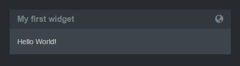

Configuration¶
Directory structure¶
Once you unzip FinalBoard package you will see following directory structure:
| File/Folder | Description |
|---|---|
| app/ | Core app. Don’t change this unless you know what you are doing |
| index.html | Main template of whole dashboard app. Be careful with this one, don’t change this file unless you know what you are doing |
| widgets/ | Widgets directory - this is where you will put all your dashboard and widget configurations. |
| widgets/default.js | Demo dashboard configuration file |
| widgets/examples/ | Demo dashboard widgets. Use these examples to create your own widgets. |
Configuration files¶
By default widgets/default.js config file is loaded. To change default location add following lines to your index.html right before app.js file is included.
<script>FinalBoard = { path: '/path/to/finalboard/' };</script>
There can be multiple config files, each config file can contain multiple dashboards. Each dashboard contains rows and rows contains widgets.
If you want to load another dashboard, just add #config_name at the end of URL. For example if another config file is named foo.js, to load it open http://your_hist/path_to_dashboard/#foo
Basics¶
To start your own dashboard you must modify widgets/default.js file. I suggest you rename widgets/default.js to widgets/demo.js to use it as a quick example later.
To better understand how FinalBoard works, i suggest you replace all content in default.js file with following:
FinalBoard.Config = {
dashboards: [{
title: "My first dashboard",
widgets: [
[
{
template: "widgets/my/hello_world.html"
}
]
]
}]
}
And now create widgets/my/hello_world.html template file with following content:
<div class="panel-heading">
<h3 class="panel-title">
<span class="glyphicon glyphicon-globe pull-right"></span>
My first widget
</h3>
</div>
<div class="panel-body">
Hello World!
</div>
Now when you reload your dashboard you should see something like this:
This is minimal configuration possible to display your own widget.
Continue to reading next sections to learn how to periodically fill your template with data, use different templating techniques and data providers.
Parameters¶
Dashboards¶
FinalBoard.Config = {
showNavigation: true,
autoRotate: 20,
dashboards: [
[ // First row of widgets
{
// First widget of first row
},
{
// Second widget of first row
}
],
[
// Second row of widgets
// ...
],
]
}
| Parameter | Type | Description |
|---|---|---|
| showNavigation | Boolean (true/false) | Shows dashboard navigation, if your config file contains multiple dashboards. |
| autoRotate | Number/Boolean (20/false) | Auto-rotates (cycles) through dashboards, if your config file contains multiple dashboards. Specify in seconds for how long single dashboard should be shown. Specify false to disable rotation. |
| dashboards | Array | Array of dashboards. Each dashboard contains Array of rows. Each row is defined as Array of widgets Objects. |
Rows¶
Each row can contain as many widgets as you like, but something from 1-4x is reasonable amount to fit into single window.
Width of widgets is automatically calculated based on count of widget per row, if not specified otherwise in widget configuration. For example if you will have 2x widgets per row, each widget will be equally 50% of width.
Widgets¶
Here are is widget example having all possible configuration parameters specified:
{
template: "my/widget.html",
data_url: "http://some_url/data.json",
data_interval: 60,
js: "my/widget.js",
css_class: "col-xs-12 col-md-8"
}
| Parameter | Type | Description |
|---|---|---|
| template | String [Required] | Path/URL to template file. Can be local/relative or remote. |
| data_url | String [Optional] | Path/URL to JSON data. Can be local/relative or remote. |
| data_interval | Number [Optional, Default=5] | Interval in seconds between data reload. |
| js | String [Optional] | Path/URL to JavaScript helper file. Useful for additional data manipulation or as data provider. Gives you full control over your widget. |
| css_class | String [Optional] | If you want you can set custom grid/width class for your widget. See Bootstrap3: Grid for more how grid system works. |